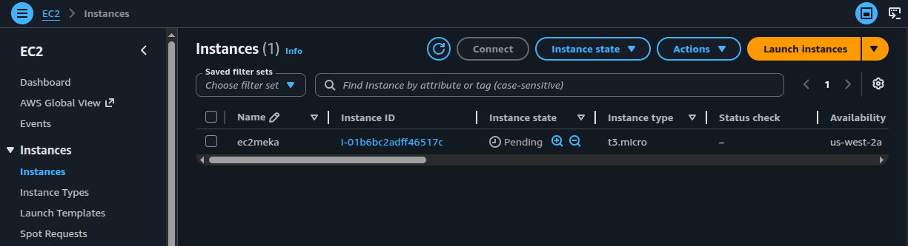
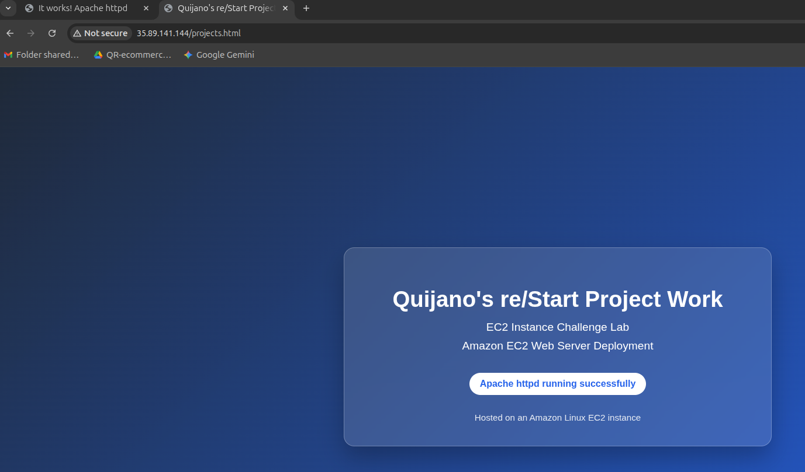

Network layer
A new VPC (restart-vpc) with a single public subnet, an Internet Gateway, and a
route table that points the default route to the IGW.
Integration challenge: build a brand-new VPC from scratch with a public subnet, Internet Gateway, and route table, then launch an Amazon Linux EC2 instance that installs Apache via user data and serves a custom HTML page over the public internet.
The challenge integrates seven moving parts. Each one has a single job, but the stack only works when all of them are wired correctly.
A new VPC (restart-vpc) with a single public subnet, an Internet Gateway, and a
route table that points the default route to the IGW.
An Amazon Linux t3.micro instance (ec2meka) placed inside the
public subnet, with a public IPv4 address assigned at launch.
Apache httpd installed and started automatically through user data, plus a
custom projects.html page placed under /var/www/html.
Built the virtual network manually instead of reusing the default VPC. Each piece below is what the lab actually required.
| Component | Name / Value | Why it exists |
|---|---|---|
| VPC | restart-vpc · CIDR 10.0.0.0/16 |
Isolated network space for the lab. /16 leaves room for many subnets. |
| Subnet | public-subnet · CIDR 10.0.1.0/24 · auto-assign public IPv4
ON |
Hosts the EC2 instance. The auto-assign flag is what gives the instance a public IP at launch. |
| Internet Gateway | Attached to restart-vpc |
The VPC's door to the public internet. Without it, no traffic enters or leaves. |
| Route Table | Default route 0.0.0.0/0 → igw, associated with
public-subnet |
Tells the subnet how to reach anything outside 10.0.0.0/16. This
is what turns the subnet "public". |
A single SG named security attached to the instance. Outbound is left at default
(all traffic allowed); only inbound matters for this lab.
| Direction | Protocol | Port | Source | Purpose |
|---|---|---|---|---|
| Inbound | TCP | 22 |
0.0.0.0/0 |
SSH access via EC2 Instance Connect to drop the custom HTML file. |
| Inbound | TCP | 80 |
0.0.0.0/0 |
HTTP access from any browser to hit projects.html. |
ec2meka
Amazon Linux t3.micro placed inside restart-vpc / public-subnet,
using the security SG and a user data script that bootstraps the web server.
| Setting | Value |
|---|---|
| Name | ec2meka |
| AMI | Amazon Linux (latest) |
| Instance type | t3.micro |
| VPC / Subnet | restart-vpc / public-subnet |
| Auto-assign public IP | Enabled (inherited from subnet) |
| Security group | security (ports 22, 80) |
| User data | Bash script — see next section |

ec2meka (t3.micro) launched in
us-west-2a, instance ID i-01b6bc2adff46517c, status transitioning
to Running.
Runs once at first boot. Updates the system, installs Apache, enables it on reboot, starts it
immediately, opens up /var/www/html for writes, and logs the final status to the
system console so it shows up in the EC2 console log.
#!/bin/bash
dnf update -y
dnf install -y httpd
systemctl enable httpd
systemctl start httpd
chmod 777 /var/www/html
echo "httpd service was successfully installed and started" | tee /dev/console
systemctl status httpd --no-pager | tee /dev/consoleenable + start?systemctl enable makes the service survive reboots;
systemctl start launches it now. Both are needed for a server that should come
back up after any restart.
chmod 777 on /var/www/html?So the non-root SSH user can drop projects.html there without escalating to
root every time. Lab-only convenience — in production this would be a tighter group ACL.
tee /dev/console?Pipes the message to the serial console so it appears in the EC2 System log output. Useful for confirming the script ran without SSHing in.
dnf vs yumAmazon Linux 2023 uses dnf (next-gen yum). Older AL2 labs use
yum; the syntax is otherwise identical.
projects.html
Connected to the instance with EC2 Instance Connect, created a small HTML file, copied it into
/var/www/html, and hit it from the browser at the instance's public IPv4 address.
<!DOCTYPE html>
<html>
<body>
<h1>Quijano's re/Start Project Work</h1>
<p>EC2 Instance Challenge Lab</p>
</body>
</html>
projects.html served at the
instance's public IPv4; right tab shows the default Apache "It works!" page on the same host
— confirming httpd is up, the SG allows port 80, and the IGW route is
functional.0.0.0.0/0 to an IGW.tee /dev/console makes user-data results visible
in the EC2 system log.This challenge tied together every piece introduced in earlier labs — VPC, subnets, IGW, route tables, security groups, EC2, and Apache — into one end-to-end deploy. The value is less in any single component and more in seeing how a request from a browser actually traverses all of them: through the IGW, into the subnet via the route table, past the SG, into the instance, and out of Apache.
The fact that one screenshot can prove every layer works is also a small reminder that good evidence is layered, not exhaustive.